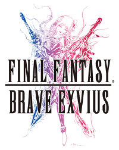
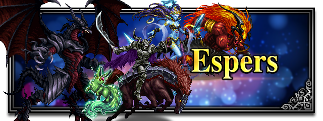
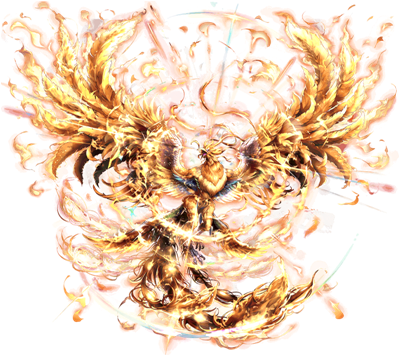
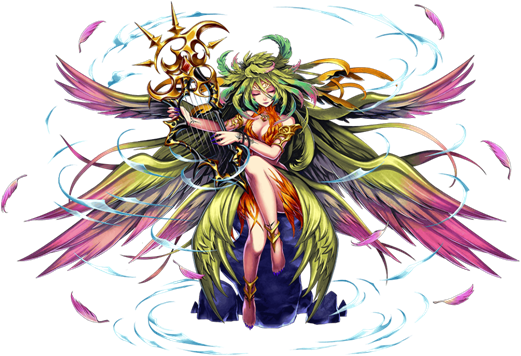
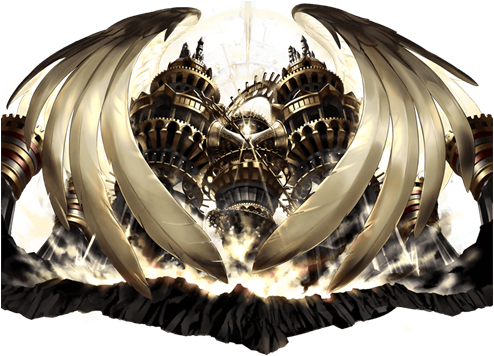
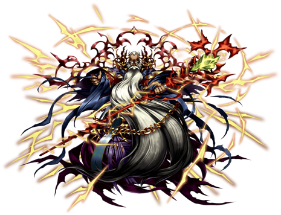
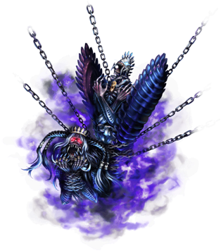

FINAL FANTASY BRAVE EXVIUS

Final Fantasy Brave Exvius es un juego de rol para dispositivos móviles, es gratuito y fue desarrollado por Alim, posteriormente fue publicado por Square Enix
para dispositivos iOS y Android. Como resultado de la serie Final Fantasy, el juego marca el primer esfuerzo de colaboración entre Square Enix y Alim y
utiliza elementos de la serie Final Fantasy con los de su juego anterior de Alim, Brave Frontier.
Y como en todo Final Fantary, no podrían dejar de aparecer los tan clamados "Espers", criaturas con las que deberás luchar para conseguir su ayuda, pero
una vez cuentes con ellos; darán más poder a los personajes. Suena genial ¿No? lastimonsamente, nada es fácil... cada uno posee un elemento (tierra, agua, hielo, etc.)
que hará única, difícil y entretenida a cada pelea, a continuación te presentamos algunos de ellos.

Existen más de 10 "Espers" en el juego de Final Fantasy Brave Exvius, pero de momento mencionaremos solo 5, una lista con los "Espes" que destacan por su
historia, por su diseño y son amados por todos los jugadores.
1. ESPER PHOENIX

Un pájaro gigante espera en la cueva del renacimiento. Está cubierto de llamas y se dice que se sumerge en lava fundida para activar su poder
de renacimiento. Su forma y habilidad lo han designado como una existencia de veneración por parte de quienes viven en Crystallis. El Fénix tiene
el papel especial de quemar el mundo, si el mundo se estanca, y para revivir al mundo de sus cenizas, entonces el Fénix es una existencia única,
incluso entre los espers.
2. ESPER SIRENA

Un esper que hace mucho tiempo fue sellado en la Torre de Sirena debido a su temible poder. La ruptura del cristal debilitó el sello sobre
él y permitió que Siren se liberara una vez más. Parece una joven hechicera con hermosas alas como las de un pájaro. Se decía que aquellos que
escuchaban su voz celestial estaban tan transportados por su poder que se tiraban al mar. Aunque Siren es un monstruo temible, también prestará
su fuerza y protección a los humanos que lo impresionen con su fuerza y voluntad.
3. ESPER ALEXANDER

Un esper que tiene la forma de una estructura colosal que se encontró en el gran pozo en las llanuras de Molera. Se dice que este tipo de
castillo mecánico se hizo durante la era de los dioses, y trae juicio santo de acuerdo con la voluntad de aquellos que considera su amo. No hay
registros ni historia de su existencia, y la única información conocida de este misterioso esper proviene de las palabras pronunciadas por un cierto
mayordomo robótico.
4. ESPER RAMUH

Un esper que ejerce el poder del rayo. Con la forma de un anciano masivo y barbudo, vive en lo alto de la Cumbre de los Truenos. Con poder
y sabiduría más allá de la capacidad humana, este dios del juicio ha sido adorado por la gente de Kolobos desde la antigüedad. Aunque se asemeja
a un humano ordinario y capaz de comunicarse en su lengua, sigue siendo un esper. El rayo de Ramuh golpea a los que se atreven a traspasar, emitiendo
un juicio implacable por sus pecados.
5. ESPER ANIMA

Un esper que fue encerrado en el foso de las cadenas. Tiene una forma temible y está fuertemente encadenado. El esper iba a ser usado para propósitos
militares, pero se volvió loco después de absorber la voluntad malvada de los humanos. Tiene un gran poder, por lo que muchos magos perdieron sus vidas
para sellar a Anima. No hay registros que muestren que se usó como un esper en su forma actual, pero si uno tiene un corazón bueno y puro, puede obtener
el poder de Anima.
.